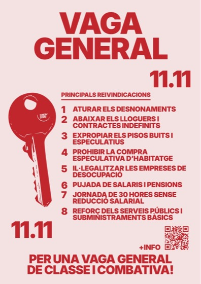
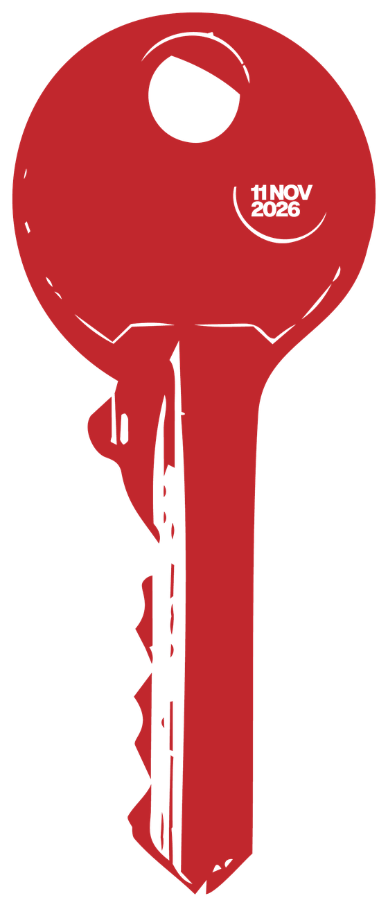
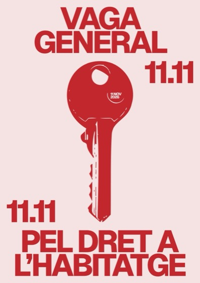
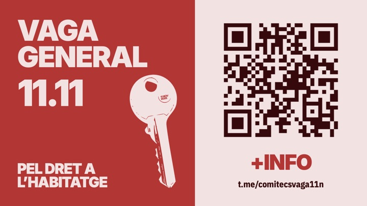
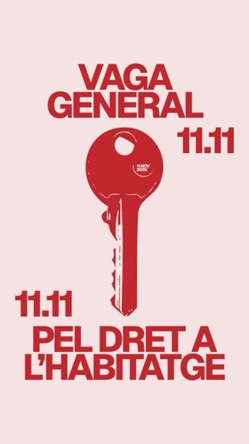
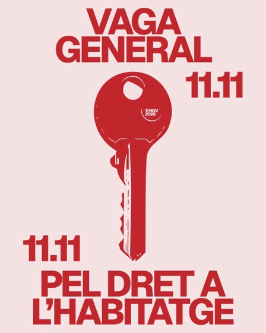
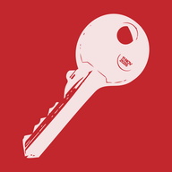

Cartell de reivindicacions
A4 amb les 8 reivindicacions i QR al canal de Telegram. Per imprimir i penjar.
El compliment del dret a l’habitatge és incompatible amb el seu negoci.

Falten
Avui és la vaga!
Activitats del Comitè de Vaga de Castelló cap a l’11 de novembre. Apunta’t i vine.
| Dia | Hora | Activitat | Lloc | Inscripció |
|---|---|---|---|---|
| Dj 29/10 | 17:30–19:30 | El disseny gràfic és la meua passió | La Verduleria · C/ Cronista Muntaner, 4 | M’apunte |
| Dv 30/10 | 11:00–13:00 | Difusió al Mercat del Divendres del Grau | Pl. de la Mare de Déu del Carme (Grau) | M’apunte |
| Dv 30/10 | 18:30–20:30 | Taller de banderes per al teu balcó | La Morralla · C/ Canalejas, 79 (Grau) | M’apunte |
| Ds 31/10 | 10:30–12:30 | Taller de banderes per al teu balcó | La Verduleria · C/ Cronista Muntaner, 4 | M’apunte |
| Ds 31/10 | 10:30–13:30 | Taller de banderes per al teu balcó | Av. Ferrandis Salvador, 10 (Grau) - Dins del Pinar, al costat del camp de futbol | M’apunte |
| Ds 31/10 | 18:30–20:30 | Taller de banderes per al teu balcó | La Morralla · C/ Canalejas, 79 (Grau) | M’apunte |
| Dl 02/11 | 09:30–11:30 | Difusió al Mercat del Dilluns de Castelló | Ronda Circumval·lació, 10 | M’apunte |
| Dc 04/11 | 16:30–18:30 | Cicle de Cinema Popular: Pride (2014) | Facultat de Ciències Humanes i Socials (UJI) | M’apunte |
| Dj 05/11 | 13:30–14:30 | Com organitzem una vaga? | Aula Magna, ESTCE-UJI | M’apunte |
| Dj 05/11 | 19:00–22:00 | Xerrada + debat amb Raúl Beltrán / Sopar | La Verduleria · C/ Cronista Muntaner, 4 | M’apunte |
| Dv 06/11 | 11:00–13:00 | Difusió al Mercat del Divendres del Grau | Pl. de la Mare de Déu del Carme (Grau) | M’apunte |
| Dl 09/11 | 09:30–11:30 | Difusió al Mercat del Dilluns de Castelló | Ronda Circumval·lació, 10 | M’apunte |
| Dc 11/11 | Tot el dia | Dia de la vaga generalActivitats per concretar | Castelló de la Plana | Més info |
Canal de Telegram
Avisos, canvis d’última hora, noves activitats i tot el que passe l’11 de novembre. Uneix-te al canal del Comitè de Vaga.
Cartells, imatges i vídeo per imprimir i difondre. Descarrega’ls i fes-los córrer.
Si en vols per repartir o penjar, passa a recollir-ne per La Verduleria (C/ Cronista Muntaner, 4) mentre hi haja activitats. Consulta el calendari per saber quan està oberta.

A4 amb les 8 reivindicacions i QR al canal de Telegram. Per imprimir i penjar.

«Pel dret a l'habitatge». En A4 i A3, per imprimir.



Fes córrer la veu: envia aquesta pàgina als teus grups.
